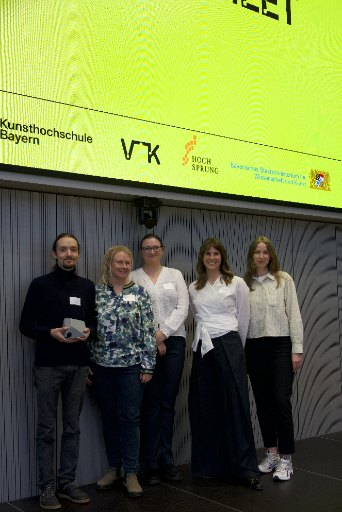
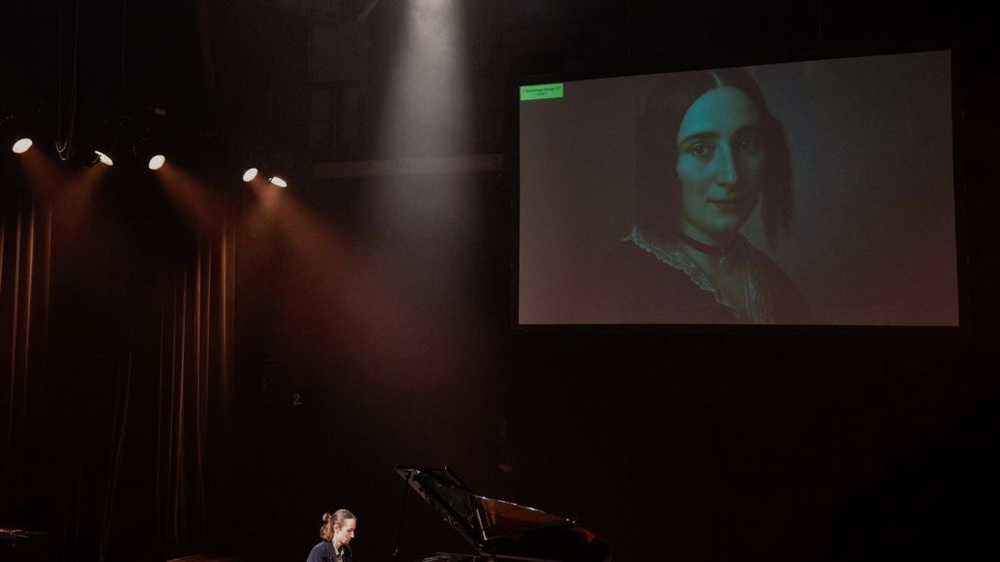
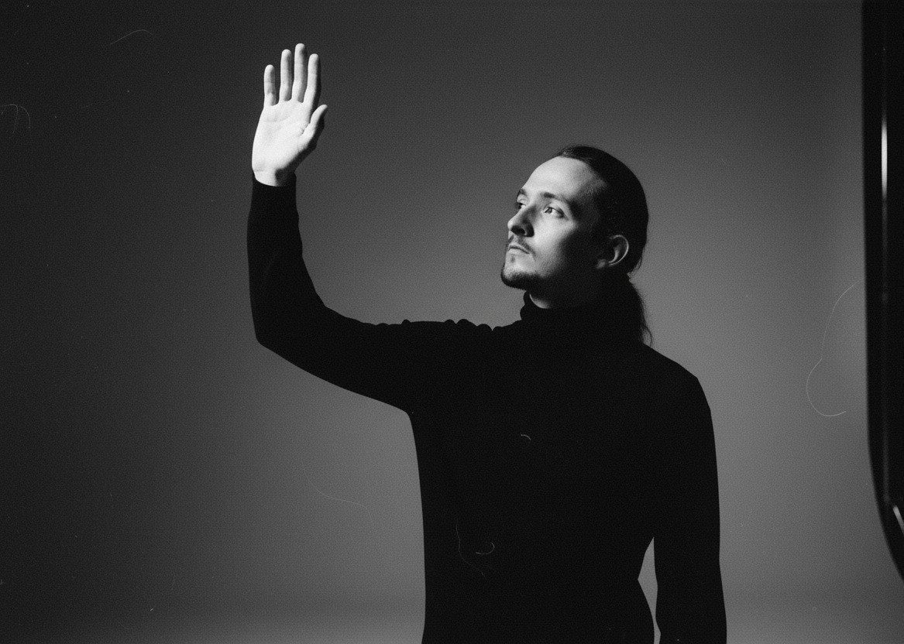

Im Dialog mit
der Vergangenheit
Das Publikum stellt eine Frage, und eine historische Persönlichkeit antwortet: als Video-Avatar, mit Stimme und Untertiteln, auf Grundlage ihrer Briefe, Tagebücher und weiterer Quellen.
Entstanden in der Musikvermittlung, umsetzbar für jede gut dokumentierte Persönlichkeit: Komponist*innen ebenso wie Maler*innen, Schriftsteller*innen, Philosoph*innen oder Politiker*innen.
Ausgezeichnet mit einer Honorable Mention bei „The next THING“, Venture Team Kultur, April 2026
Aktuell
-
Video folgt
seit 3. Oktober 2026läuft derzeit
Virtual Arnold
Arnold Schönberg Center, Wien
Die Schönberg-Installation von ComposerMeet wurde in der Langen Nacht der Museen eröffnet und ist weiterhin im Haus zu erleben.
-
Xplorer Day
Deutsches Museum Verkehrszentrum, München
Mit ComposerMeet beim Xplorer Day in München.
Derzeit keine öffentlichen Termine. Anfragen gern per E-Mail.
Rückblick
-
Video folgt
Lange Nacht der Museen
Arnold Schönberg Center, Wien
Präsentation von ComposerMeet und Start der Schönberg-Installation „Virtual Arnold“. Die Eröffnung war ein überragender Publikumserfolg.
-
Fotos folgen
IMBRA-Konferenz
17. International Music Business Research Days, München
Célest Lang als Speaker und beim Roundtable zum Thema „Music and Entrepreneurship“.
-
Foto folgt
Ars Electronica 2026
Cross-Innovation-Reise, Linz
Mit ComposerMeet Teil der Cross-Innovation-Reise zur Ars Electronica.
-

April 2026
„The next THING“
Venture Team Kultur
Honorable Mention für ein quellenfundiertes, KI-basiertes Vermittlungsformat.
Foto: Venture Team Kultur (Yolanda Castillo-Kuchenbecker)
-

Februar 2026
Pilotfolge Fanny Hensel
Hochschule für Musik und Theater München
Die erste Live-Umsetzung von ComposerMeet: ein Konzert, in dem das Publikum mit Fanny Hensel ins Gespräch kam.
Foto: Jakob Schad
Mitschnitt
Die Idee
Jemand im Publikum stellt eine Frage. Auf der Leinwand antwortet eine historische Persönlichkeit in Echtzeit, mit Stimme und Untertiteln.
Grundlage sind ausgewählte Quellen: BriefeEin Beispiel: Am 16. Juli 1820 schrieb Abraham Mendelssohn Bartholdy seiner Tochter Fanny, die Musik werde für sie „stets nur Zierde, niemals Grundbaß“ ihres Seins und Tuns sein. Darauf bezieht sich die Antwort im Avatar oben., Tagebücher, wissenschaftliche Analysen und zeitgenössische Berichte. Ein KI-System formuliert daraus eine Antwort im Stil der Zeit und nennt die Quellen. Bis die Antwort kommt, vergehen ein paar Sekunden. In dieser Zeit sieht das Publikum, wie das System arbeitet.
Das Publikum hört nicht nur zu, es fragt selbst. Aus einer Einführung wird so ein Gespräch, das neugierig macht und trotzdem auf Fakten beruht.
Belegt. Jede Antwort beruht auf dokumentierten Quellen und nennt sie. So lässt sich nachprüfen, woher eine Aussage stammt.
Im Gespräch. Der Avatar geht auf die Fragen ein, antwortet auf Augenhöhe und doziert nicht.
In ihrer Zeit. Werk und Leben erscheinen mit ihren sozialen und historischen Bedingungen. Wo eine Antwort über die Quellen hinausgeht, wird das gekennzeichnet.
Nicht nur Musik
Der Name verrät, woher das Projekt kommt: ComposerMeet ist in der Musikvermittlung entstanden. Umsetzen lässt sich aber jede historische Persönlichkeit, deren Leben gut dokumentiert ist, aus Malerei, Literatur, Philosophie, Politik und vielen weiteren Bereichen. Jede Figur wird eigens für ein Projekt entwickelt.
Bisher umgesetzt: Fanny HenselFanny Hensel, geb. Mendelssohn (1805 bis 1847), Komponistin und Pianistin. Ab 1831 leitete sie die „Sonntagsmusiken“ im Berliner Elternhaus. als Pilotfolge an der Hochschule für Musik und Theater München und Arnold Schönberg als Installation „Virtual Arnold“ im Arnold Schönberg Center WienDas Arnold Schönberg Center in Wien bewahrt den Nachlass des Komponisten..
So entsteht eine Antwort
Die gesprochene Frage wird verschriftlicht, mit den hinterlegten Quellen abgeglichen und im Stil der Persönlichkeit beantwortet. Der Avatar spricht die Antwort mit Stimme und Mimik, die Quellen werden genannt. Diesen Ablauf sieht das Publikum live auf dem Bildschirm. Das System ist redundant aufgebaut: Fällt eine Komponente aus, übernimmt eine andere.
Für Ihr Haus
Museen und Gedenkorte
Eine historische Persönlichkeit, die den ganzen Tag Rede und Antwort steht.
Als Installation in Ausstellung, Foyer oder Gedenkstätte. Ob Malerin im Kunstmuseum, Dichter im Literaturhaus oder Staatsmann im Geschichtsmuseum: Die Besucher*innen kommen selbst mit ihnen ins Gespräch.
- Im Museum im Einsatz. Aktuell als Installation im Arnold Schönberg Center Wien.
- Stabil und unbeaufsichtigt im Dauerbetrieb.
- Untertitel und sichtbarer Ablauf. Barrierefrei und nachvollziehbar.
- Wenig Technik. Rechner, Bildschirm, Mikrofon und Lautsprecher.
Orchester und Konzerthäuser
Die Komponistin des Abends, live vor dem Konzert.
Als Werkeinführung im Gespräch oder als Teil der Moderation, 20 bis 30 Minuten. Das Publikum fragt, die Komponistin antwortet.
- Inhalte und Quellen werden pro Projekt abgestimmt. Sie behalten die redaktionelle Kontrolle.
- Redundant aufgebaut. Damit ist das System auch live auf der Bühne ausfallsicher.
- Erprobt. Erstmals umgesetzt an der HMTM München.
Festivals
Ein Programmpunkt, über den gesprochen wird.
Für Musik-, Literatur-, Kunst- oder Geschichtsfestivals: ein Moment, in dem das Publikum mitmacht. Auch hybrid möglich, mit Fragen aus dem Saal und per Livestream.
- Mitmachen statt Zuschauen. Das Publikum gestaltet das Gespräch.
- Hybrid und per Livestream. Auch für Publikum, das nicht vor Ort ist.
- Auf das Festival zugeschnitten. Persönlichkeit und Thema passen zum Programm.
Schule und Unterricht
Geschichte, mit der man ins Gespräch kommt.
In Musik, Geschichte, Deutsch, Kunst oder Philosophie: Schüler*innen befragen eine historische Persönlichkeit zu Werk, Weltsicht und Biografie. Zugleich gibt das Format Anlass, über KI, Autorschaft und historische Erzählungen nachzudenken.
- Quellenarbeit zum Erleben. Primär- und Sekundärquellen im Dialog.
- Medienkompetenz. Dass hier eine KI antwortet, wird offen gezeigt.
- Anpassbar an Alter, Fach und Unterrichtsziel.
Keine Replikation, sondern eine Interpretation.
Es geht um Vermittlung, um die spielerische Auseinandersetzung mit Geschichte und ihren Quellen. Dass die Antworten aus einem KI-System stammen, wird offen gesagt, und die Quellen werden genannt. ComposerMeet erweckt niemanden zum Leben. Es lädt zum Nachdenken ein.
Auszeichnung
Honorable Mention bei „The next THING“
„Auszeichnung für ein faszinierendes und quellenfundiertes, KI-basiertes Vermittlungsformat mit hoher Skalierbarkeit und einem innovativen Zugang zu musikalischer Bildung und Interaktion.“
Über den Gründer

Célest Lang ist Pianist und Musikvermittler mit Schwerpunkt auf neuen Konzertformaten. Seine Arbeit verbindet künstlerische Praxis mit technischer Neugier und einem kritischen Blick auf historische Quellen.
ComposerMeet ist an dieser Schnittstelle von Musik, KI und Kulturvermittlung entstanden und wächst seither über die Musik hinaus.
Kontakt
Sie möchten ComposerMeet für Ihr Haus anfragen oder haben eine Persönlichkeit im Sinn? Schreiben Sie an